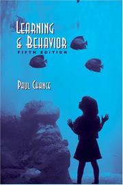

《学习与行为》
书·Paul Chance, 1979·Learning and Behavior

一本通行的学习心理学教材，把经典条件作用、操作性条件作用及其模型讲得清楚。
- 作者
- Paul Chance
- 年份
- 1979
- 难度
- 进阶
- 类型
- 概览
- 所属学派
- 经典条件作用、操作性条件作用
- 核心理论
- 雷斯科拉—瓦格纳模型、味觉厌恶与生物准备性、强化程式、匹配律
版本
- 英文版 Learning and Behavior Paul Chance · Seventh edition, Wadsworth (Cengage Learning) · 2014 Open Library ↗